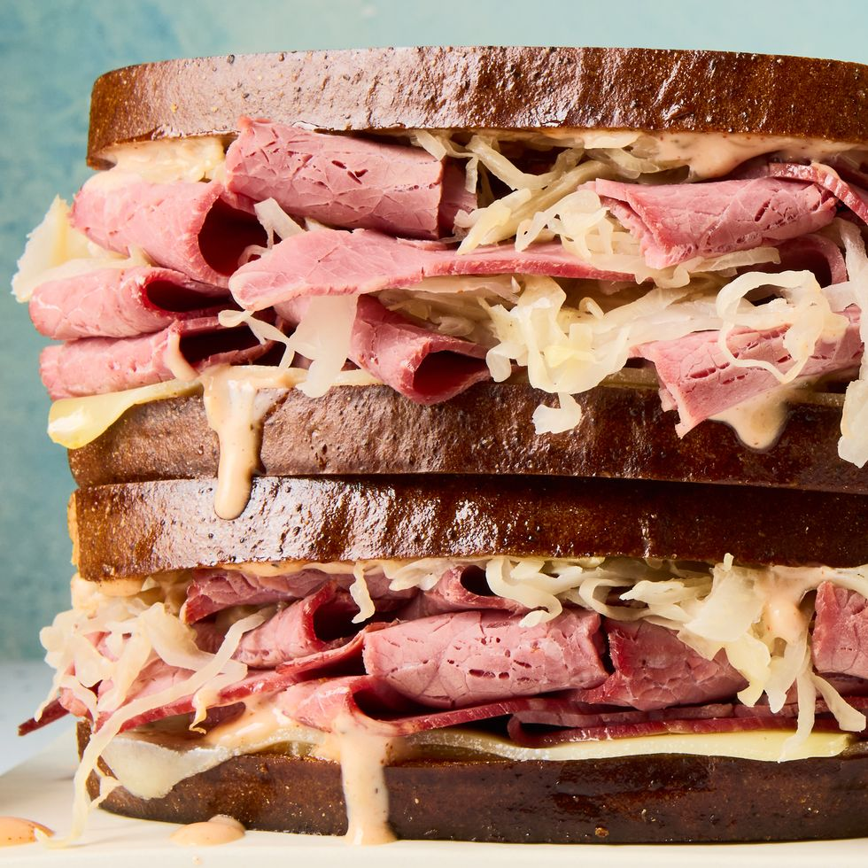

Reuben Sandwich

Description:
This salty, cured corned beef pairs perfectly with tart sauerkraut and mild, almost creamy melted Swiss. Sitting between two slices of toasted rye bread, this dish is built to impress.
Ingredients:
For the Sandwich:
- 8 slices rye bread
- 4 tbsp. butter, softened
- 1/4 c. Russian dressing
- 8 slices Swiss cheese
- 3/4 lb. corned beef
- 1 c. sauerkraut
For the Russian Dressing
- 1/2 c. mayonnaise
- 3 tbsp. ketchup
- 2 tbsp. horseradish
- 2 tsp. Worcestershire sauce
- 1 tbsp. granulated sugar
- 1/4 tsp. paprika
- Kosher salt
- Freshly ground black pepper
Directions
For the Sandwich:
- Butter one side of each slice of bread. On the non-butter side spread Russian dressing on each slice. Top half of the slices with cheese, corned beef, and sauerkraut. Top each sandwich with remaining slices, dressing side down.
- Heat a medium skillet over medium heat. Place a sandwich in skillet and cook until golden and cheese is melted, 3 minutes per side.
For the Russian Dressing:
- In a medium bowl, whisk together mayonnaise, ketchup, horseradish, Worcestershire, sugar, and paprika until combined. Season with salt and pepper.